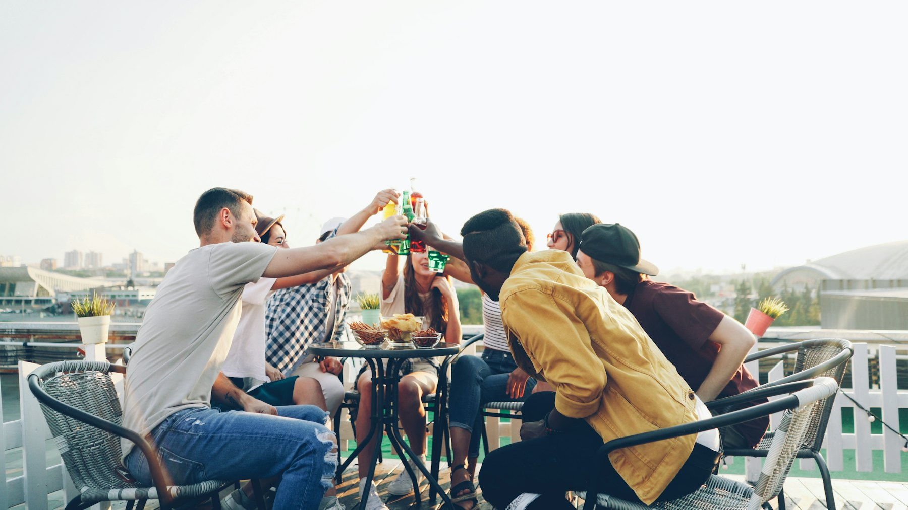
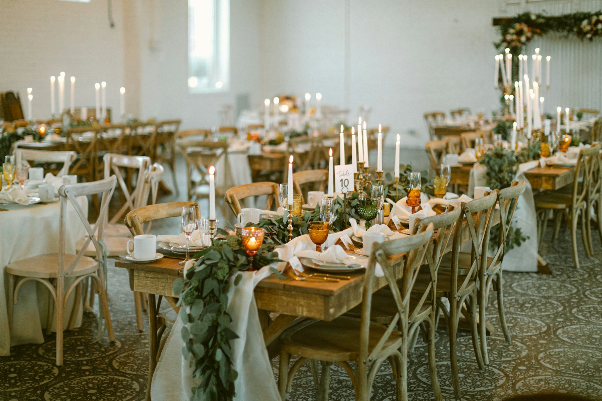
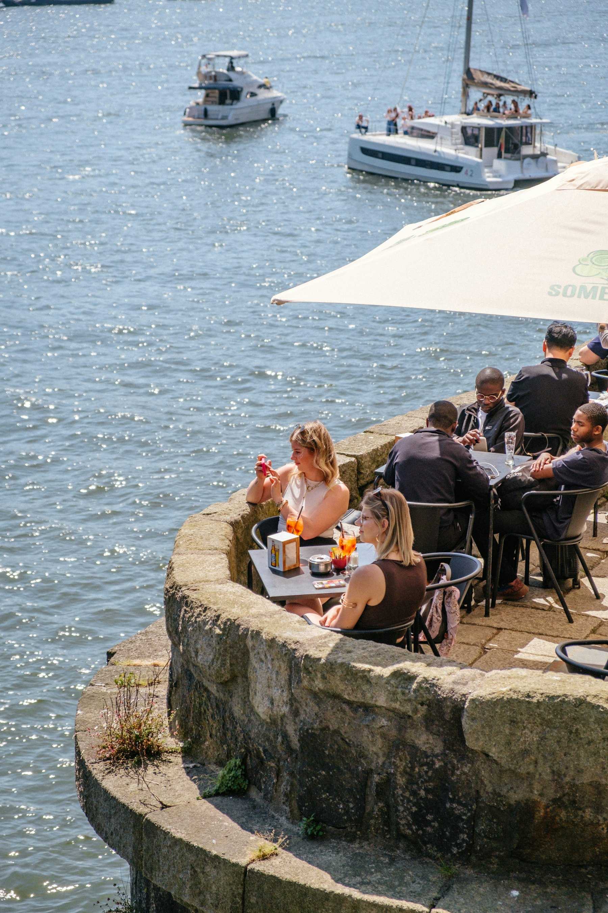
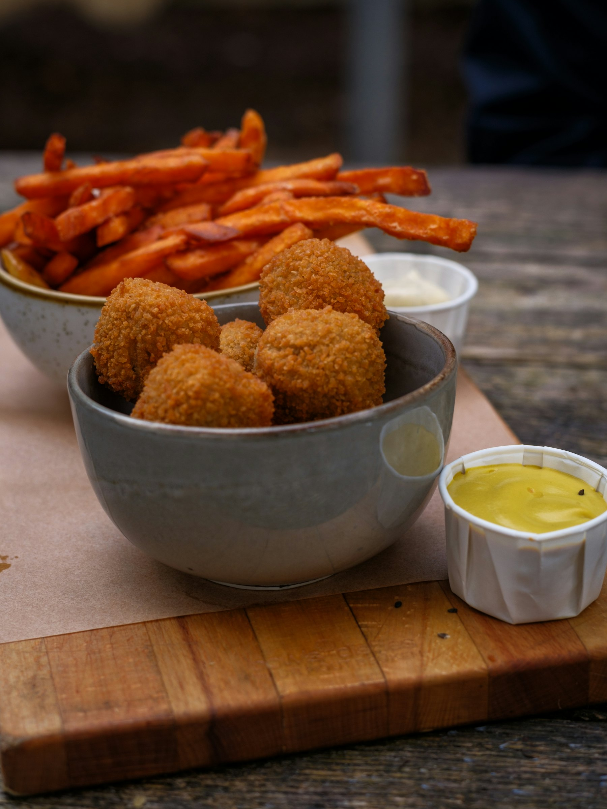
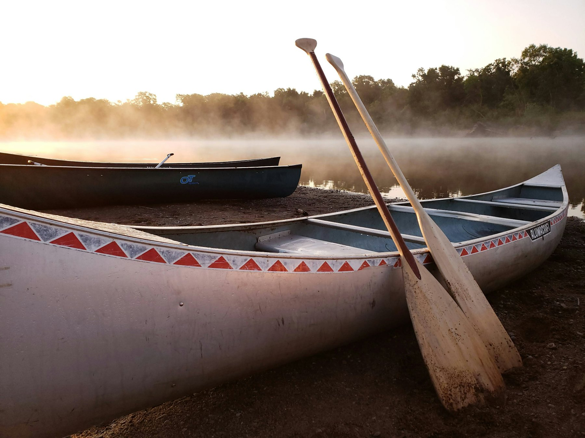

Son → Sint-Oedenrode
ongeveer 2,5 uur varen
- Open Canadese kano 2 à 3 personen
- € 46
- Kajak 1 persoon
- € 25
Prijzen per boot
Sint-Oedenrode, aan de Dommel
Modern café, ruime feestzaal en een terras recht aan het water. Naast zwembad De Neul en het Dommelpark.
Dommelzicht ligt, zoals de naam al zegt, aan de rivier de Dommel in het centrum van Sint-Oedenrode. Het grenst aan zwembad en sportpark De Neul en aan het natuurrijke Dommelpark, midden in een netwerk van wandel- en fietsroutes.
Sinds 2022 zijn we geopend in onze nieuwbouw naast het nieuwe zwembad De Neul. Kom voor een activiteit op het water, een vergadering, receptie, feest of gewoon een gezellige avond.

Voor een koud drankje na het kanoën of een avond bijpraten.

Plek voor maximaal 150 gasten, op zaterdagavond met het café erbij tot 250.

Recht aan het water, met direct ernaast een steunpunt voor kano's.
Vanuit Dommelzicht ben je in 10 minuten in Son en Breugel. Daar stap je in en vaar je door het Rooise landschap terug naar ons terras. In een open Canadese kano is plaats voor 2 à 3 personen, dus kleine kinderen kunnen mee zonder zelf te peddelen.
ongeveer 2,5 uur varen
Prijzen per boot
ongeveer 3,5 uur varen
Prijzen per boot

Dommelzicht verzorgt de complete organisatie van je feest. De feestzaal biedt plek aan maximaal 150 gasten, het café aan maximaal 75. Op zaterdagavond staat ook het café tot je beschikking, voor feesten tot 250 gasten. Bij de zaal en het café liggen twee grote terrassen. In overleg kan alles geregeld worden.
Ontvang je gasten met koffie en gebak of champagne, zet bittergarnituur of tapas op tafel, of serveer een complete maaltijd: van stamppot- en Italiaans buffet tot barbecue of tapas-diner.
150 gasten in de zaal75 in het café250 samen, op zaterdagavond
Prijslijst 2026, prijzen per persoon
* Kies je voor drankafkoop, dan zijn deze arrangementen € 4,00 per persoon goedkoper.
Minimale afname van 30 stuks per soort.
Liever avondvullend? Er zijn tapas-arrangementen van vijf tapas per persoon, een mix uit de prijsgroepen hierboven. Vraag naar de mogelijkheden.
Tik op een buffet om te zien wat erbij zit.
Start met groentesoep, daarna een ciabatta met gerookte zalm, een broodje gezond en een worstenbroodje. Lunchdranken (melk, jus d’orange en appelsap) zijn inbegrepen.
Groente- of tomatensoep, een ciabatta zalm, een volkorenbroodje brie/gezond en een broodje saté. Afsluiten met vers fruit en koffie of thee. Lunchdranken (melk, jus d’orange en appelsap) inbegrepen.
Een eenvoudige afsluiter van een feest, of een snelle hap na een sportieve middag. Met stokbrood, friet, rauwkost en diverse sauzen.
Als het saté buffet, met daarnaast de keuze voor een broodje hamburger.
Een echte Hollandse maaltijd: drie soorten stamppot, hachee, spek, rookworst en appelmoes.
Mini tomatencrèmesoep · gevuld ei, mini garnalencocktail en zalmwrapje · gehaktballetjes in satésaus · mini kiploempia’s, garnalenloempia’s en calamares · mini pizza · kippenvleugeltjes met friet · bolletje roomijs met jus d’orange.
Mini tomatencrèmesoep · mini carpaccio · vistrio · mini loempia · scampispiesje · kipsaté · bolletje roomijs met vers fruit.
Met huzarensalade, drie verse salades, vers fruit, stokbrood met kruidenboter en tapenade en diverse sauzen. Varkenshaasspies, hamburger, gemarineerde kipfilet, gemarineerde entrecote, sparerib en scampispiesjes. Wij bakken het vlees voor je; op verzoek mag je het ook zelf doen.
Stokbrood met kruidenboter en tapenade, huzarensalade, Griekse salade, slamix, gehaktballetjes in satésaus, ham in champignonsaus en aardappelgratin.
Stokbrood met kruidenboter en tapenade, huzarensalade, Griekse salade, rauwkost, slamix, zalm, garnalen, haring, kipreepjes in satésaus, ham in champignonsaus, rijst, aardappelgratin, pittige kippenvleugeltjes en vers fruit.
Luxe brood met kruidenboter, tapenade en aioli, luxe opgemaakte huzarensalade, Griekse salade, rauwkost, slamix, carpaccio, luxe visschaal, kipreepjes in satésaus, gebakken scampi’s, beenham in champignonsaus, nasi, aardappelkroketjes, aardappelgratin of friet en een luxe vers fruitschaal.
Stokbrood met kruidenboter en tapenade, koude pastasalade met pesto, koude pastasalade met groente, Italiaanse salade, slamix, carpaccio, lasagne, tagliatelle spinazie en pasta bolognese.
Een uitgebreid Chinees buffet met al je favoriete Chinese gerechten.
Bavarois, viënetta-ijs, chocolademousse, spekkoek, boerenroomijs, vers fruit, slagroom en sauzen. Een mooie afsluiter van een ander buffet, of als tussendoortje.
Van deze voorbeelden kan altijd worden afgeweken; we lichten de mogelijkheden graag toe in een gesprek. Mogelijkheden en prijzen 2026 (pdf)
Alle activiteiten zijn te combineren met eten en drinken. Een paar voorbeelden, en in overleg kan er nog veel meer.

Korte instructie, naar de opstapplaats en ongeveer 2,5 uur varen over de Dommel. Bij aankomst staat een luxe barbecue of koud/warm buffet klaar.
€ 47,50 p.p. excl. drank, vanaf 20 personen
Koffie met gebak, op de kickbike door het Rooise landschap, lunch in de natuur, kanotocht terug en een koud/warm buffet of tapas-diner.
€ 69 p.p. excl. drank, vanaf 20 personen
Zwemfeest op vrijdagavond, als het zwembad een grote disco is. Voor en na het zwemmen frietjes, drinken en snoep in het café. In de zomer ook met kanoën, vanaf 10 jaar.
€ 16 per kind, met kanoën € 22 p.p.
Klasgenoten of voetbalmaten weer eens zien? Iedereen krijgt vier consumptiebonnen en wij serveren hapjes. Klikt het nog, dan blijf je gewoon hangen.
€ 16 per persoon
Eerst een koud/warm buffet of tapas-diner, daarna je geluk beproeven aan de professionele casinotafels. De winnaar krijgt een prijs.
vanaf 25 personen
Uitgestippelde knooppuntroutes vanaf Dommelzicht, van 10 tot ongeveer 40 kilometer. Op de fiets, tandem, mountainbike, kickbike of step.
Onder begeleiding van een echte natuurkenner, ongeveer anderhalf uur.
Tijdens de vrije zwemuren, of huur op bepaalde tijden het hele zwembad af.
Samen met Rofra: onder meer handboogschieten, workshops en GPS-routes.
Sint-Oedenrode ontstond rond 500 na Christus op een hoge plek bij de Dommel, uit twee nederzettingen: Rode op de linkeroever en Eerschot op de rechteroever. Vanaf 1231 was het de hoofdstad van Peelland, met stadsrechten. Nu is “Rooi” een groen en gastvrij dorp met bijna 17.500 inwoners.
Een Staatsnatuurmonument van ruim 100 hectare met zeldzame planten en dieren, naast een veenplas uit de turftijd in een broekbos. Met een bewegwijzerde route.
Zo’n 250 hectare bos op een stuifzandheuvel bij Nijnsel, ooit heide en zandverstuiving. Met wandel- en ruiterroutes en een trimbaan.
Een van de mooiste beekdalen van het land, van zuid naar noord door Sint-Oedenrode. Met fiets- en wandelroutes, en natuurlijk te zien vanuit een kano.
Kleine percelen met populieren rond Boskant, en natuurgebied de Scheeken met populierenbos, spar, eik en weilanden. Let op de figuren in oude populieren van boomkunstenaar Theo Sonnemans.
In overleg is Dommelzicht ook buiten deze tijden open voor groepen, bijeenkomsten en feesten.
| Maandag | 19.00 – 01.00 |
|---|---|
| Dinsdag | op aanvraag |
| Woensdag | 19.30 – 01.00 |
| Donderdag | 19.30 – 01.00 |
| Vrijdag | 09.00 – 12.30 20.00 – 02.00 |
| Zaterdag | op aanvraag |
| Zondag | op aanvraag |
| Maandag t/m zondag | 10.00 – 17.00 |
|---|
Dommelstraat 18, 5492 DX Sint-Oedenrode
links achter zwembad De Neul, aan de Dommel